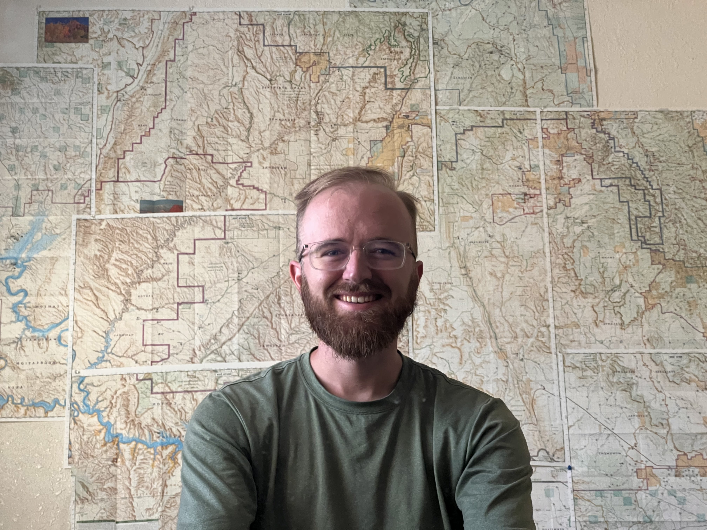

About Me

I am Dave Babson.
Growing up in North Carolina, I initially found my calling to Programming back in high school. Continuing to hone my technical skill through college at the University of North Carolina at Chapel Hill, I earned my Bacholer's Degree in Computer Science. I continued with this into my professional career at Epic Health Systems in Wisconsin. While there, I not only found a true passion to mapping and cartography, but also came the realization that there is signifigant overlap between Programming and modern digital Cartography. Beginning taking class at University of Wisconsin, I set my sights on a Masters degree in GIS, a leading cartographical platform, with a focus on interactive web maps.